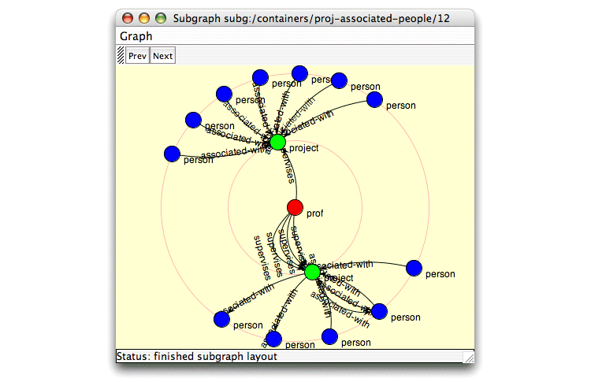

Subqueries allow you to group complex substructures with numeric annotations just as you grouped individual query elements in Exercise 5.3.
In this example we want to find, for every faculty member, all their research projects and all the individuals associated with each of those research projects. We interpret links from faculty pages to research project pages to mean that this faculty member supervises the associated project. We similarly interpret links connecting research project pages to other individuals’ web pages as indicating involvement in or interest in that project, regardless of the direction of the link. Taken together, all these links identify individuals associated with a particular project. The subgraphs that match the query created in this exercise each identify a single faculty web page, all the research project pages it links to, and all the other faculty, student, and staff pages linked to or from those research project pages.
The structure of this query is a 2d-star. Similar to the 1d-star query shown in Exercise 5.3, a 2d-star is the cluster of 1d-stars directly linked to a core object. We use a subquery to specify the 1d-star substructure within a 2d-star query.
In describing this query we made several assumptions about how objects and links in the database correspond to entities and relationships in the world. Although these assumptions may seem reasonable, it’s important to remember that we might be wrong in some or all of these assumptions. If we go on to use the results of this query in a model, appropriate care must be taken in applying the models’s predictions to real world situations.
Exercise 5.5. Using subqueries in a query:
The query created in this exercise is also available in the
Proximity 4.3 distribution in
$PROX_HOME/doc/user/tutorial/examples/project-people.qg2.xml.
Before beginning, make sure that you are serving the ProxWebKB database using Mserver. Start the Proximity Database Browser if it is not already running.
-
From the Query menu, choose New Query. Proximity starts the Query Editor.
-
Create an unannotated vertex labeled
project. Add the conditionpagetype = ResearchProjectto this vertex.
-
Create another vertex labeled
person. Add the conditionOR(pagetype = Faculty, pagetype = Student, pagetype = Staff)to this vertex. Proximity requires the use of prefix notation and disjunctive normal form to express complex conditions.
-
Add the annotation
[0..]to the person vertex. This annotation makes matching the person vertex optional. Any pages matching the person vertex will be included in the query results, but the query will match appropriate research project web pages regardless of whether they link to another faculty, student, or staff page. -
Create an undirected edge labeled
associated-withlinking the project vertex to the person vertex. If you do not have automatic edge annotation enabled, add the numeric annotation[1..]to this edge.The correct annotation for an edge adjacent to an optional vertex is almost always
[1..]. See the Proximity QGraph Guide for an explanation of why this is the appropriate annotation. -
Click
 or press Ctrl-4
to choose the subquery tool.
Drag the mouse to create a rectangle that contains both vertices and
the connecting edge.
or press Ctrl-4
to choose the subquery tool.
Drag the mouse to create a rectangle that contains both vertices and
the connecting edge.

Release the mouse button. The Query Editor changes the color of the vertices inside the rectangle to red to indicate that they are part of a subquery.
All subqueries must be annotated. The Query Editor automatically adds a
[1..]annotation to new subqueries. To change this annotation, click inside the subquery box and edit the subquery’s properties in the element properties pane. -
Create a vertex named
profoutside the subquery area. Add the conditionpagetype = Facultyto this vertex.
-
Create a directed edge named
supervisesfrom the prof vertex to the project vertex. -
Add the numeric annotation
[1..]to the supervises edge. The boundary edge of a subquery must be annotated.
-
Add the identity constraint
prof <> personto the query. This constraint ensures that the same object does not match both the prof and person vertices in the same subgraph.
-
Check the status list at the bottom of the Query Editor window to make sure the query is valid. If the query is not valid, examine the errors and fix any problems before continuing.
-
[Optional] Add a name and description and save the query.
-
From the File menu, choose Run or press Ctrl-R to execute your query. Proximity prompts you for a name for the results container. Enter
proj-associated-peopleand click OK.Proximity opens a window to show you a trace of the query execution. The last lines should be similar to the following excerpt (leading information showing elapsed time and execution thread has been omitted from the trace for brevity):
INFO kdl.prox.qgraph2.QueryGraph2CompOp - -> found 42 subgraphs INFO kdl.prox.qgraph2.QueryGraph2CompOp - -> query results saved in container: proj-associated-people INFO kdl.prox.qgraph2.QueryGraph2CompOp - * query: done Status: finished running query
Close this window after the query finishes.
-
Examine the query results in the proj-associated-people container. Click Home to go to the Proximity Database Browser start page. Click Containers, then click proj-associated-people. Proximity displays the list of subgraphs for this container.
-
Click 12 to see the details of this subgraph. This subgraph includes two research project objects.
-
Click graph to display the subgraph’s graph structure. Because graph layout is non-deterministic, your graph may look somewhat different than that shown below.
 -
Continue to explore the results of your query. When you are finished, continue to the next section.
![[Caution]](images/caution.png)